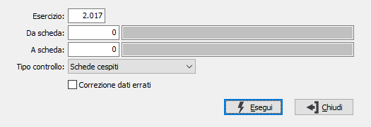

Controllo schede
Il programma esegue controlli di coerenza sui movimenti cespiti e sulla tabella totali cespiti, nonché l'eventuale correzione dei totali errati; è opportuno che venga eseguito prima di effettuare la generazioni di ammortamenti. In caso di incoerenza, produce un report in cui vengono evidenziate le seguenti anomalie:
totali esercizio errati
movimenti con indicatore aggiornato totalizzatori a zero, ovvero movimenti cespiti che non hanno aggiornato i totali cespiti
data messa in esercizio errata
data cessione errata

ESERCIZIO: inserire il numero relativo all'esercizio di cui si vuole eseguire il controllo.
DA SCHEDA: inserire il codice del cespite da cui si vuole iniziare la selezione. Confermando a vuoto, la selezione inizia dal primo cespite valido. Sul campo sono attive le funzioni di ricerca (F9).
A SCHEDA: inserire il codice del cespite con cui si vuole terminare la selezione. Confermando a vuoto, la selezione termina con l’ultimo cespite valido. Sul campo sono attive le funzioni di ricerca (F9).
TIPO CONTROLLO: permette di selezionare il tipo di controllo da eseguire. Valori ammessi: Schede cespiti; Movimenti cespiti.
CORREZIONE DATI ERRATI: definisce se effettuare solo il controllo dei dati oppure anche la correzione di eventuali errori riscontrati (casella con segno di spunta).